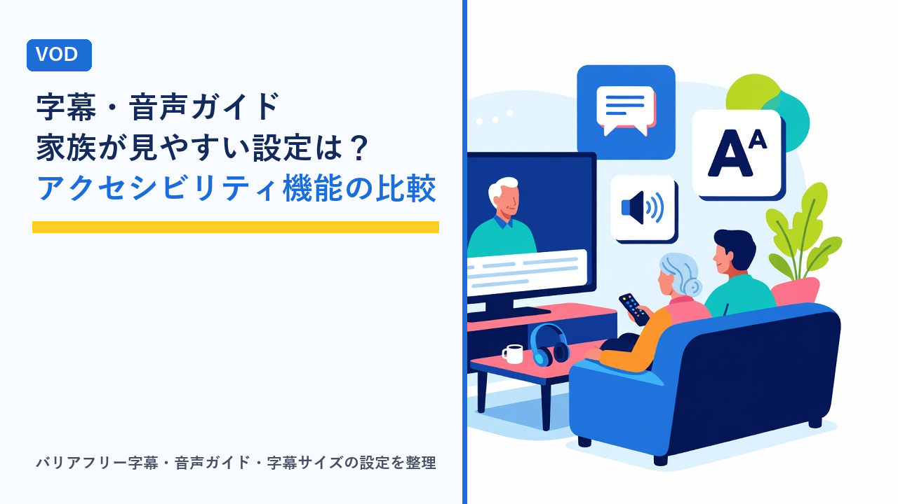

VODの字幕・音声ガイドなどアクセシビリティ機能の比較：高齢の家族や聞き取りづらい人向けの設定
更新日：2026-10-31

動画配信サービス（VOD）は、テレビ放送と比べて「字幕を出す」「音声を切り替える」といった操作を自分で選べる場面が多い一方で、どの機能がどの作品で使えるのか、設定がサービス側なのかテレビ側なのかが分かりにくいという声もよく聞かれます。特に、高齢の家族がセリフを聞き取りづらくなってきた、視力の低下で字幕が読みにくい、といった場面では、機能の有無と設定場所を知っているかどうかで使いやすさが大きく変わります。この記事では、VODのアクセシビリティ（利用しやすさ）に関わる機能を種類ごとに整理し、比較表と設定の考え方、契約前の確認手順を客観的にまとめます。特定のサービスをすすめるものではなく、仕組みの理解を目的とした内容です。
VODのアクセシビリティ機能にはどんなものがあるか
「アクセシビリティ機能」と一口に言っても、関わる場面はいくつかに分かれます。おおまかに分類すると次のとおりです。
- 聞こえを補う機能：日本語作品にも付けられる日本語字幕（バリアフリー字幕・クローズドキャプション）、効果音や話者名の表示、音声の明瞭化やセリフ強調（主にテレビ・端末側の機能）。
- 見えを補う機能：映像の状況を音声で説明する音声ガイド（音声解説）、字幕の文字サイズ・色・背景の変更、アプリ画面の文字拡大や読み上げ（端末側の機能）。
- 操作を楽にする機能：再生速度の変更、リモコンの音声操作、プロフィールごとに字幕や音声の既定値を保存する機能、自動再生のオン・オフ。
- 家族で使うときの機能：人ごとのプロフィールで字幕設定を分ける、子ども向けの制限と組み合わせる、といった使い方。
これらは「サービスが用意する機能」「作品ごとに付いているデータ」「テレビやスマホなど端末の機能」の3層に分かれており、どの層の話かを区別することが、使えない・見つからないときの切り分けの第一歩になります。
「翻訳字幕」と「バリアフリー字幕」は別のもの
字幕について最初に押さえておきたいのが、字幕には大きく2種類あるという点です。
| 種類 | 主な目的 | 対象になりやすい作品 | 特徴 |
|---|---|---|---|
| 翻訳字幕 | 外国語のセリフを日本語で読む | 洋画・海外ドラマ・韓国ドラマなど | セリフの訳のみ。効果音や話者名は原則入らない |
| バリアフリー字幕（クローズドキャプション／CC、聴覚障害者向け字幕とも呼ばれる） | 音が聞こえない・聞き取りづらい人がセリフと音の情報を文字で把握する | 日本の映画・ドラマ・アニメ・バラエティなど日本語作品 | セリフに加えて「（ドアの開く音）」「（笑い声）」などの効果音、話者名や音楽の説明が入ることがある |
多くのVODでは、字幕の選択画面に「日本語」とだけ表示されるため、外国語作品の翻訳字幕と日本語作品のバリアフリー字幕が同じ見た目で並びます。注意したいのは、日本語作品にバリアフリー字幕が付いているかどうかは作品ごとに異なることです。サービス全体として字幕機能があっても、見たい作品に字幕データがなければ表示できません。高齢の家族が見たいのが国内のドラマや時代劇であれば、「そのサービスの日本語作品にどの程度字幕が付いているか」が実際の使い勝手を左右します。
字幕・吹き替えの提供方式（別作品として並ぶ方式と再生中に切り替える方式）の違いは、VODの字幕・吹き替え・音声設定の違いまとめで整理しています。
音声ガイド（音声解説）の仕組み
音声ガイドは、セリフの合間に「男が部屋を出ていく」「手紙を机に置く」といった映像の状況をナレーションで説明する音声で、視力が低下した人や画面を見続けるのがつらい人が内容を追うための機能です。VODでは通常の音声とは別の音声トラックとして用意され、再生中の音声選択メニューから「日本語（音声ガイド）」「音声解説付き」といった名前で切り替えるのが一般的です。
ただし、音声ガイドの対応作品は字幕に比べてまだ限られており、サービス全体の作品のごく一部にとどまることが多いのが現状です。海外の大手サービスのオリジナル作品では付いていることが多く、国内作品では映画の一部や近年の作品を中心に少しずつ増えている段階です。音声ガイドを目的にサービスを選ぶ場合は、見たい作品に付いているかを個別に確認する必要があります。
機能別の比較表：どこで設定し、何に依存するか
使いたい機能がどこで設定でき、何によって使える・使えないが決まるかを整理します。
| 機能 | 設定する場所 | 使えるかどうかを決めるもの | 確認のしかた |
|---|---|---|---|
| 日本語作品の日本語字幕（バリアフリー字幕） | 再生画面の字幕メニュー | 作品ごとの字幕データの有無 | 作品の詳細ページに「字幕」「CC」などの表記があるか。再生中に字幕メニューで日本語が選べるか |
| 翻訳字幕・吹き替え | 再生画面の字幕・音声メニュー、または字幕版・吹替版を別作品として選ぶ | 作品ごとの提供形態 | 作品ページの「字幕／吹替」表記 |
| 音声ガイド（音声解説） | 再生画面の音声メニュー | 作品ごとの音声トラックの有無 | 作品ページの「音声ガイド」「音声解説」表記、または音声メニューの選択肢 |
| 字幕の文字サイズ・色・背景 | サービスのアカウント設定、または端末のアクセシビリティ設定 | サービスと端末の両方の対応 | サービスの設定画面に「字幕の表示設定」があるか。なければテレビやスマホ側の設定を確認 |
| 再生速度の変更 | 再生画面の設定メニュー | サービスと端末アプリの対応 | スマホ・ブラウザでは使えてテレビアプリでは使えない、という差がある |
| セリフの強調・音声の明瞭化 | テレビ・サウンドバーの音声設定 | 端末側の機能 | テレビの音声メニューに「クリア音声」「ボイス強調」などの項目があるか |
| アプリ画面の文字拡大・読み上げ | 端末のアクセシビリティ設定 | 端末側の機能とアプリの対応 | スマホのOS設定で拡大・読み上げを有効にし、アプリの一覧や作品名が読み上げられるか |
| プロフィールごとの字幕・音声の既定値 | プロフィール設定、または最後に選んだ設定を記憶 | サービスのプロフィール機能 | プロフィールを切り替えて字幕設定が保持されるか |
同じサービスでも、スマホアプリ・ブラウザ・テレビアプリ・ストリーミング端末で使える設定項目が異なることがあります。家族が普段使う端末で確認することが重要です。
サービス側の設定とテレビ・端末側の設定を分けて考える
「字幕が小さくて読めない」「セリフだけ聞き取りにくい」といった困りごとは、サービスの設定だけでは解決しないことがあります。どちらで対応するかの目安は次のとおりです。
- 字幕の有無・言語の切り替え：サービス側。作品にデータがなければ端末側では出せません。
- 字幕の大きさ・色・背景：サービス側に設定があればそれを優先し、なければテレビやスマホのアクセシビリティ設定で字幕スタイルを変えられる場合があります。ストリーミング端末（Fire TVなど）やスマートTVのOSに字幕表示の設定を持つものもあります。
- セリフの聞き取りやすさ：主にテレビ・サウンドバー側。「クリア音声」「ボイスモード」「ナイトモード（音量差を抑える）」などの名称で、セリフ帯域を持ち上げたり効果音との差を小さくしたりする機能があります。映画の5.1ch音声はセリフと効果音の音量差が大きくなりやすいため、サービス側の音声メニューにステレオ音声があれば切り替えるのも一つの方法です。
- 補聴器・ヘッドホンでの視聴：テレビ側のBluetooth接続や、ヘッドホン端子からの出力で対応します。テレビのスピーカーとヘッドホンを同時に鳴らせる機種なら、家族と一緒に見ながら本人だけ音量を上げることができます。
- 画面の文字が小さい・操作が難しい：端末側の文字拡大、読み上げ、リモコンの音声検索などで対応します。アプリ自体の文字サイズを変えられるVODは限られています。
テレビで見るための端末の違いや選び方は、テレビでVODを見る方法まとめで整理しています。
高齢の家族向けに整えるときの設定例
高齢の家族が自分で操作して楽しめる状態を目指す場合、次のような順番で整えると負担が少なくなります。
- 本人用のプロフィールを作る：字幕を常に表示する設定や、見ている途中の作品の一覧を本人専用にできます。家族の視聴履歴と混ざらず、おすすめの一覧も本人の好みに寄っていきます。プロフィールの仕組みはVODの視聴履歴・おすすめ機能の仕組みをご覧ください。
- 字幕を「常にオン」にし、文字を大きく背景を付ける：サービスの字幕表示設定で、文字サイズを大きめにして黒や半透明の背景を付けると、明るい場面でも読みやすくなります。設定がないサービスでは端末側の字幕スタイルを確認します。
- テレビの音声モードを見直す：セリフ強調やナイトモードを試し、本人に聞き取りやすい設定を見つけたら、それを既定にしておきます。
- 自動再生をオフにする：次の話や予告が勝手に始まると、どこまで見たか分からなくなる原因になります。設定画面で「次のエピソードを自動再生」「プレビューの自動再生」を切れるサービスが多くあります。
- 見たい作品をマイリストに入れておく：検索操作が負担になる場合、家族があらかじめマイリストに入れておけば、トップ画面の「マイリスト」から選ぶだけで済みます。
- リモコンの操作を絞る：VODボタン付きのリモコンや、音声検索ができる端末を使うと、文字入力の負担が減ります。ホーム画面に使うアプリだけを並べておくのも有効です。
設定した内容は、アプリの更新やテレビの初期化で戻ることがあります。何をどこで設定したかをメモしておくと、再設定が楽になります。
聞き取りづらい人向けに確認したいこと
加齢や難聴などでセリフが聞き取りづらい場合、契約前に次の点を確認しておくと、「契約したのに見たい作品に字幕がなかった」という行き違いを防げます。
- 見たいジャンルの日本語作品にバリアフリー字幕が付いているか：国内ドラマやバラエティは字幕の付き方に差が大きいジャンルです。無料体験の期間中に、よく見る作品を実際に再生して字幕メニューを確認するのが確実です。
- ライブ配信・リアルタイム配信の字幕対応：録画された作品に比べて、生配信の番組は字幕が付かないことが多くあります。スポーツ中継やニュースをよく見る場合は、放送の字幕放送との違いも含めて確認します。
- 字幕とセリフのずれや表示の速さ：バリアフリー字幕はセリフを忠実に文字にするため、翻訳字幕より文字数が多くなりがちです。表示時間が短くて読みきれないと感じる場合は、再生速度を少し遅くできるサービス・端末かどうかも確認します。
- 音声メニューの選択肢：5.1chサラウンドのほかにステレオ音声が選べるか、音声ガイドがあるかを作品ページで見ておきます。
契約前に確認する手順
- 使う端末を決める：テレビで見るのか、タブレットで手元で見るのかで、使える設定項目が変わります。
- サービスのヘルプで「字幕」「音声ガイド」「アクセシビリティ」を検索する：字幕表示のカスタマイズができるか、音声ガイド対応作品の探し方が書かれているかを確認します。対応作品の一覧ページや検索フィルターを用意しているサービスもあります。
- 見たい作品の詳細ページで表記を確認する：「字幕」「CC」「音声ガイド」「吹替」などのアイコンや表記を見ます。
- 無料体験があれば実際の端末で試す：字幕メニューの選択肢、文字の大きさ、音声の切り替えを本人と一緒に確認します。無料体験の条件は動画配信サービスの無料体験まとめ比較で整理しています。
- 合わなければ期間内に解約する：解約忘れの防ぎ方はVODサービスの解約忘れを防ぐコツと注意点まとめをご覧ください。
選び方のポイント
- 「字幕機能がある」ではなく「見たい作品に字幕がある」で判断する：サービス全体の機能と作品ごとのデータは別です。特に日本語作品のバリアフリー字幕は作品単位で確認します。
- 字幕の見た目を変えられるかを確認する：文字サイズと背景の変更ができると、読みやすさが大きく変わります。サービス側になければ端末側で変えられるかも見ます。
- 普段使う端末で設定項目が揃っているか：テレビアプリでは再生速度や字幕スタイルの設定が省かれていることがあります。
- 音声ガイドが必要なら対応作品の探しやすさを見る：対応作品の一覧や絞り込みがあるサービスのほうが、見るたびに探す手間が減ります。
- プロフィール機能で本人の設定を独立させられるか：家族と共用すると、字幕や自動再生の設定が他の人の操作で変わってしまうことがあります。
- テレビ側の音声機能とセットで考える：セリフの聞き取りやすさはサービスだけでは決まりません。テレビやサウンドバーの音声モードと組み合わせて整えます。
よくある質問
日本のドラマや映画にも日本語字幕は付けられますか？
作品によります。日本語作品の日本語字幕は「バリアフリー字幕（クローズドキャプション）」と呼ばれ、セリフに加えて効果音や話者名が表示されるものです。VODのサービス全体として字幕機能があっても、個々の作品に字幕データが用意されていなければ表示できません。近年の作品や大手サービスのオリジナル作品では付いていることが増えていますが、過去の作品やバラエティ番組では付いていないことも多くあります。見たい作品の詳細ページで「字幕」「CC」などの表記を確認するか、無料体験中に実際に再生して字幕メニューを見るのが確実です。
字幕の文字が小さくて読めません。大きくできますか？
サービスのアカウント設定や再生画面に「字幕の表示設定」「字幕スタイル」がある場合は、そこで文字サイズ・色・背景を変えられます。サービス側に設定がない場合でも、スマートTVやストリーミング端末、スマホのOSにあるアクセシビリティ設定で字幕の見た目を変えられることがあり、対応しているアプリではその設定が反映されます。どちらにも設定がない組み合わせでは、画面に近づける手元のタブレットで見る、より大きなテレビで見るといった環境側の対応になります。設定の有無はサービスと端末の組み合わせで決まるため、普段使う端末で確認してください。
音声ガイド（音声解説）はどのくらいの作品で使えますか？
字幕に比べると対応作品はまだ限られています。海外の大手サービスのオリジナル作品では付いていることが多い一方、国内作品では映画の一部や近年の作品を中心に少しずつ増えている段階で、サービス全体から見ると一部にとどまります。音声ガイドは通常の音声とは別のトラックとして提供され、再生中の音声メニューから切り替えます。対応作品の一覧ページや検索の絞り込みを用意しているサービスもあるため、音声ガイドを重視する場合は、ヘルプで探し方を確認し、見たい作品が含まれているかを契約前に見ておくと安心です。